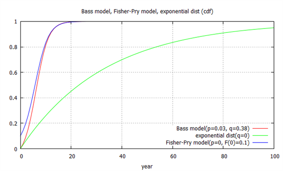
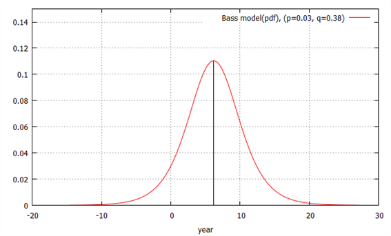
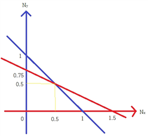
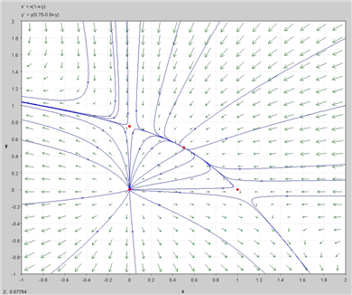

신제품 성장모형의 기초가 되는 마케팅 개념은 제품수명주기(product life cycle)이다. 신제품의 판매는 도입·성장·성숙·쇠퇴의 단계를 거치며, 이는 생물의 생애주기와 유사한 형태로 이해할 수 있다.
확산모형은 주로 이러한 제품수명주기를 판매예측의 관점에서 표현하지만, 현상을 기술하거나 정책·전략적 판단을 위한 목적으로도 활용할 수 있다.
혁신의 확산은 본질적으로 사회적 현상이므로 그 복잡성을 이해하려면 여러 학문 분야의 설명을 함께 활용할 필요가 있다.
Bass 확산모형은 새로운 기술과 서비스의 채택을 설명할 때 특히 유용하다. 디지털 TV, 노트북, 가정용 광대역 인터넷, 휴대전화, 위치센서 등 기존 방식을 크게 바꾸는 기술의 보급을 분석하는 데 폭넓게 적용되어 왔다.
또한 디지털 플랫폼을 기반으로 한 서비스의 이용 확산에도 적용할 수 있다. 예를 들어 블로그와 소셜네트워크 가입, SNS·유튜브·트위터 같은 개인 간 통신 서비스, 온라인 쇼핑 등의 성장이다.
(가정)
(a) 고객을 혁신자와 모방자(imitators)로 구분[52]
모방자: 기존 채택자의 영향을 주로 받아 구매하는 사람을 모방자(imitator)라고 한다.[53]
(b) 제품(내구재)을 구입하지 않은 고객이 t기에 제품을 구입할 확률은 이미 구매한 사람들수의 선형함수이다.[54]
Pr(T)=p+ \frac{q}{M} A(T) ; t기 전까지 제품을 구매하지 않다가 t기에 처음 구매할 확률
A(T) ; T기까지 제품 구매자의 수(cumulative adopters)
p : 혁신계수(coefficient of innovation), 시장에서 혁신자(innovators)의 비중을 의미.[55]
q : 모방계수(coefficient of imitation), 혁신자에 의해 모방하는 사람들의 비율[56]
M : the potential market (the ultimate number of adopters)(상수)
\frac{q}{M} Y(T) : 제품 보유자가 늘어남에 따라 모방자에게 미치는 구매압력을 의미. the number of adoptions at time t is proportional to the number of prior adopters. In other words, the more people talking about a product, the more other people in the social system will adopt
(모형)
f(t) -- the portion of M that adopts at time t
F(t) -- the portion of M that have adopted by time t
a(t) -- adopters (or adoptions) at t
A(t) -- cumulative adopters (or adoptions) at t[57]
A(T)=MF(T)
양변미분하면
\frac{dA(T)}{dT} \,=\,a(T)=Mf(T)[58]
한편 고장률은 다음과 같이 정의된다.[59]
고장률(위험률) : t 기까지 사건이 발생하지 않다가 t기에 발생할 확률.
\lambda (t)=h(t)= \frac{f(t)}{P(T \geq t)} \,=\, \frac{f(t)}{1-F(t)}
이는 제품구매모형에서 t 기까지 제품을 구매하지 않다가 t기에 구매할 확률을 의미한다.
따라서
\lambda (T)=Pr(T)
⇒ \, \frac{f(T)}{1-F(T)} =\,p+ \frac{q}{m} A(T)\,=\,p+q\,F(T)[60]
∴ \,f(T)=\,[\,p+q\,F(T)][1-F(T)]
=p+(q-p)F(T)-q[F(T)] ^{2} ................①
a(T)=Mf(T)에 ①을 대입하면
a(T)=Mp+M(q-p)F(T)-Mq[F(T)] ^{2}
=Mp+(q-p)A(T)- \frac{q}{M} [A(T)] ^{2} .......[61]
F를 구하기 위해 다음 미분방정식을 푼다.
\frac{dF}{dT} =p+(q-p)F(T)-q[F(T)] ^{2}
ⅰ) 리카티 미분방정식을 이용
ⅱ) 변수분리방법을 사용
\, \frac{dF}{dT} \,=f(T)\,=\,[\,p+q\,F(T)][1-F(T)]
⇒ \, \frac{dF}{[\,p+q\,F(T)][1-F(T)]} \,=dT\,
⇒ \, \frac{1}{p+q} \left[ \frac{q}{\,p+q\,F(T)} + \frac{1}{1-F(T)} \right] dF\,=dT\,
양변 적분하면
\, \frac{1}{p+q} \int \left[ \frac{q}{\,p+q\,F(T)} + \frac{1}{1-F(T)} \right] dF\,= \int dT\,
⇒ \, \frac{1}{p+q} \left[ \ln\,[p+q\,F(T)]-\ln[1-F(T)] \right] +C_{2} \,=T+C_{1} \,
⇒ \, \left[ \ln\,[p+q\,F(T)]-\ln[1-F(T)] \right] \,=(p+q)T+C_{3} \, , where C_{3} \,=\,(p+q)(C_{1} +C_{2} )
⇒ \ln\, \frac{p+q\,F(T)}{1-F(T)} \,=(p+q)T+C_{3} \,
⇒ \, \frac{p+q\,F(T)}{1-F(T)} \,=C_{4} e^{(p+q)T\,} , where C_{4} \,=e^{C_{3}} \,
∴ F(T)\,= \frac{C_{4} e^{(p+q)T} -p}{C_{4} e^{(p+q)T} +q} \,
F(0)=0 이므로
F(0)\,= \frac{C_{4} -p}{C_{4} +q} =0\,
∴ C_{4} =p
∴ F(T)\,= \frac{pe^{(p+q)T} -p}{pe^{(p+q)T} +q} \,=\, \frac{e^{(p+q)T} -1}{e^{(p+q)T} +q/p}
\,=\, \frac{1-e^{-(p+q)T}}{1+ \frac{q}{p} e^{-(p+q)T}} ; Bass 확산모형
ⅰ) p=0 이면, 혁신자가 0 이면 모방자만 있다면
\, \frac{dF}{dT} \,=f(T)\,=\,q\,F(T)][1-F(T)]
이는 로지스틱 곡선이다. 이 경우를 특별히 Fisher-Pry 모형이라 한다.
새 기술의 채택은 종종 분명한 성능상 이점 때문에 촉진되며, 그 결과 신기술 기반 제품이 구기술 제품을 대체한다. 신제품이 기존 제품을 대체하는 경우 채택 속도는 아직 사용 중인 구제품의 비율과 신제품이 차지한 비율의 곱에 비례한다고 볼 수 있다.
확산과정을 설명할 때 모방의 중심적 역할을 강조하고 이를 로지스틱 곡선으로 표현할 수 있다는 점은 혁신 연구의 여러 접근법에서 공통적으로 나타난다.
모방행동에 의한 확산은 사회학습이론(social learning theory)과 직접 연결된다. Bandura(1971)의 사회학습 접근은 개인 내부의 요인만이 아니라 타인과의 정보교환이 행동 변화를 결정한다고 본다. 경제학에서도 Veblen은 『유한계급론』에서 모방을 개인 경제행동의 구조적 요소로 보았다.
이를 풀면
F(T)\,=\, \frac{F(0)}{F(0)+ \left[ 1-F(0) \right] e^{-qT}} \,=\, \frac{1}{1+e^{-q(T-T*)}} , where T*는 시장점유율 50%되는 시점.[62]
따라서 초기조건이 F(0) != 0,\,(0<F(0) \leq 1) 이어야 의미가 있다.
즉 기본 구매자 A(0) > 0 이어야 함.[63]
ⅱ) q=0 이면, 모방자가 0 이면
F(T)\,=\,1-e^{-pT}
이는 지수분포이다.
(그림) Bass모형, Fisher-Pry 모형, 지수분포 cdf[64]

\,A(T)=\, \left[\frac{1-e^{-(p+q)T}}{1+ \frac{q}{p} e^{-(p+q)T}} \right] M
\, \lim\limits_{t \to \infty } A(T)=\, \lim\limits_{t \to \infty } \left[ \frac{1-e^{-(p+q)T}}{1+ \frac{q}{p} e^{-(p+q)T}} \right] M=M
시간이 흐름에 따라 구매자수는 최대시장 한계에 근접
\,f(T)= \frac{dF(T)}{dT} =\, \frac{[(p+q)e^{-(p+q)T} ][1+ \frac{q}{p} e^{-(p+q)T} ]-[1-e^{-(p+q)T} ][- \frac{q}{p} (p+q)e^{-(p+q)T} ]}{\left( 1+ \frac{q}{p} e^{-(p+q)T} \right) ^{2}}
\,=\, \frac{(p+q)e^{-(p+q)T} \left[ (1+ \frac{q}{p} e^{-(p+q)T} )+(1-e^{-(p+q)T} ) \frac{q}{p} \right]}{\left( 1+ \frac{q}{p} e^{-(p+q)T} \right) ^{2}}
\,=\, \frac{\frac{ (p+q) ^{2} }{p}e^{-(p+q)T}}{\left( 1+ \frac{q}{p} e^{-(p+q)T} \right) ^{2}}

이 함수의 최대값은
f(T)=p+(q-p)F(T)-q[F(T)] ^{2} 을 이용하면
1차조건 :
\frac{d}{dT} f(T)=[(q-p)-2qF(T)] \frac{dF}{dT} \,=\,0
⇒ (q-p)-2qF(T)\,=\,0, (∵\frac{dF}{dT} \,=f(T)>0)
∴ F*\,=\, \frac{q-p}{2q}
2차조건 :
\frac{d^{2} f}{dT^{2}} =[(q-p)-2qF] \frac{d^{2} F}{dT^{2}} \,+[-2q \left( \frac{dF}{dT} \right) ^{2} ]
=-2q \left( \frac{dF}{dT} \right) ^{2} \,<0 , ∵((q-p)-2qF(T*)\,=\,0)
따라서 F*\,=\, \frac{q-p}{2q} 은 F의 변곡점, 또는 f의 최대값
이제 다음을 만족하는 T*를 구함
\,F(T*)\,=\, \frac{1-e^{-(p+q)T*}}{1+ \frac{q}{p} e^{-(p+q)T*}} = \frac{q-p}{2q}
a\,=\,e^{-(p+q)T*} , b= \frac{q-p}{2q} 라 하면
\,F(T*)\,=\, \frac{1-a}{1+ \frac{q}{p} a} =b
⇒ a\,=\, \frac{1-b}{1+b \frac{q}{p}} \,=\, \frac{p-pb}{p+bq}
a\,=\,e^{-(p+q)T*} , b= \frac{q-p}{2q} 를 대입하면
\,e^{-(p+q)T*}\,=\, \frac{p-pb}{p+bq} \,=\, \frac{p-p \frac{q-p}{2q}}{p+ \frac{q-p}{2}} \,=\, \frac{2pq-pq+p^{2}}{2pq+q^{2} -pq} = \frac{p}{q}
∴ T*\,= \frac{\,\ln (q/p\,)}{p+q}
통계적 추정 및 시장조사를 통해 p, q, M 을 추정하면 A(T), A(T*), T*를 도출하고 제품의 수명주기를 알 수 있다.
하나의 식량을 갖고 두 종족이 경쟁하는 경우의 인구증가모형을 고려하자
(가정)
(i) 하나의 종족만 존재할 때 로지스틱모형을 따른다.
\frac{dN_{\scriptscriptstyle {X}} (t)}{dt} \,=r_{\scriptscriptstyle {X}} N_{\scriptscriptstyle {X}} \left( 1- \frac{N_{\scriptscriptstyle {X}}}{K_{\scriptscriptstyle {X}}} \right)
N_{\scriptscriptstyle {X}} (t) : 종족 x의 t 시점에서 인구
K_{\scriptscriptstyle {X}} : 종족 x의 인구 상한
r_{\scriptscriptstyle {X}} : 종족 x의 인구증가율
(ii) 경쟁종족(y)의 등장은 기존 종족의 인구증가율을 비례적으로 감소시킨다.
\frac{dN_{\scriptscriptstyle {X}} (t)}{dt} \,=r_{\scriptscriptstyle {X}} N_{\scriptscriptstyle {X}} \left( 1- \frac{N_{\scriptscriptstyle {X}} + \gamma_{\scriptscriptstyle {X}} N_{\scriptscriptstyle {Y}}}{K_{\scriptscriptstyle {X}}} \right)
\frac{dN_{\scriptscriptstyle {Y}} (t)}{dt} \,=r_{\scriptscriptstyle {Y}} N_{\scriptscriptstyle {Y}} \left( 1- \frac{N_{\scriptscriptstyle {Y}} +\gamma_{\scriptscriptstyle {Y}} N_{\scriptscriptstyle {X}}}{K_{\scriptscriptstyle {Y}}} - \right)
where \gamma_{\scriptscriptstyle {X}} >0, \gamma_{\scriptscriptstyle {Y}} >0 경쟁계수(competition coefficient)
\gamma_{\scriptscriptstyle {X}}는 y 종족이 x 종족에 미치는 효과. \gamma_{\scriptscriptstyle {Y}}는 x 종족이 y 종족에 미치는 효과.
\gamma_{\scriptscriptstyle {X}} <1은 y 종족이 x 종족에 미치는 효과가 x 종족이 자신에게 미치는 효과보다 작음을 의미
\gamma_{\scriptscriptstyle {X}} >1은 y 종족이 x 종족에 미치는 효과가 x 종족이 자신에게 미치는 효과보다 큼을 의미 \gamma_{\scriptscriptstyle {Y}} 도 유사하게 해석
예) 종족경쟁모형
r_{\scriptscriptstyle {X}} \,=\,1 , K_{\scriptscriptstyle {X}} \,=1 , \gamma_{\scriptscriptstyle {X}} \,=1 , r_{\scriptscriptstyle {Y}} \,=\, \frac{3}{4} , K_{\scriptscriptstyle {Y}} \,= \frac{3}{4} , \gamma_{\scriptscriptstyle {Y}} \,= \frac{1}{2}
\frac{dN_{\scriptscriptstyle {X}} (t)}{dt} \,=N_{\scriptscriptstyle {X}} \left( 1-N_{\scriptscriptstyle {X}} \,-\,N_{\scriptscriptstyle {Y}} \right)
\frac{dN_{\scriptscriptstyle {Y}} (t)}{dt} \,= \frac{3}{4} N_{\scriptscriptstyle {Y}} \left( 1- \frac{4}{3} N_{\scriptscriptstyle {Y}} \,-\, \frac{2}{3} N_{\scriptscriptstyle {X}} \right)
(풀이)
균형값은 \frac{dN_{\scriptscriptstyle {X}} (t)}{dt} \,=\frac{dN_{\scriptscriptstyle {Y}} (t)}{dt} \,=\,0 에서 결정되므로
N_{\scriptscriptstyle {X}} \left( 1-N_{\scriptscriptstyle {X}} \,-\,N_{\scriptscriptstyle {Y}} \right) \,=\,0 .......................①
N_{\scriptscriptstyle {Y}} \left( 0.75-N_{\scriptscriptstyle {Y}} \,-\,0.5N_{\scriptscriptstyle {X}} \right) \,=\,0 ...............②

①식은 N_{\scriptscriptstyle {X}} \,=\,0 혹은 1-N_{\scriptscriptstyle {X}} \,-\,N_{\scriptscriptstyle {Y}} \,=\,0 ⇒ 파란선
②식은 N_{\scriptscriptstyle {Y}} \,=\,0 혹은 0.75-N_{\scriptscriptstyle {Y}} \,-\,0.5N_{\scriptscriptstyle {X}} \,=\,0 ⇒ 빨간선
①, ②를 동시에 만족해야 하므로 파란선과 빨간선과의 교점을 구한다.[65]
(N_{\scriptscriptstyle {X}} \,,\,N_{\scriptscriptstyle {Y}} ) = (0, 0), (0, 0.75), (1, 0), (0.5, 0.5)
그림상으로 수렴, 발산의 구분이 불분명하므로 선형근사법을 사용하여 각 균형점에서 안정, 불안정을 판정한다.[66]
\frac{dN_{\scriptscriptstyle {X}} (t)}{dt} \,=N_{\scriptscriptstyle {X}} \left( 1-N_{\scriptscriptstyle {X}} \,-\,N_{\scriptscriptstyle {Y}} \right) =\,f_{1} (N_{\scriptscriptstyle {X}} \,,\,N_{\scriptscriptstyle {Y}} )
\frac{dN_{\scriptscriptstyle {Y}} (t)}{dt} \,=N_{\scriptscriptstyle {Y}} \left( 0.75-N_{\scriptscriptstyle {Y}} \,-\,0.5N_{\scriptscriptstyle {X}} \right)=\,f_{2} (N_{\scriptscriptstyle {X}} \,,\,N_{\scriptscriptstyle {Y}} )
테일러전개를 이용해 선형화하면
{\begin{pmatrix}\frac{dN_{\scriptscriptstyle {X}}}{dt} \\ \frac{dN_{\scriptscriptstyle {Y}}}{dt}\end{pmatrix}} = {\begin{pmatrix}\frac{\partial f_{1}}{\partial N_{\scriptscriptstyle {X}}}&\frac{\, \partial f_{1}}{\partial N_{\scriptscriptstyle {Y}}} \\ \frac{\partial f_{2}}{\partial N_{\scriptscriptstyle {X}}}&\, \frac{\partial f_{2}}{\partial N_{\scriptscriptstyle {Y}}}\end{pmatrix}}{\begin{pmatrix}N_{\scriptscriptstyle {X}} \\ N_{\scriptscriptstyle {Y}}\end{pmatrix}}
= {\begin{pmatrix}1-2N_{\scriptscriptstyle {X}} -N_{\scriptscriptstyle {Y}} & \;-N_{\scriptscriptstyle {X}} \\ -0.5N_{\scriptscriptstyle {Y}} & \;0.75-0.5N_{\scriptscriptstyle {X}} -2N_{\scriptscriptstyle {Y}} \,\end{pmatrix}}{\begin{pmatrix}N_{\scriptscriptstyle {X}} \\ N_{\scriptscriptstyle {Y}}\end{pmatrix}}
(i) (N_{\scriptscriptstyle {X}} \,,\,N_{\scriptscriptstyle {Y}} ) = (0, 0)
A = {\begin{pmatrix}1 & 0 \\ 0 & \;0.75\end{pmatrix}}
대각행렬이므로 대각원소가 고유치이다.
∴\lambda_{1} \,=1\,, \lambda_{2} \,=0.75\,
대각행렬이므로 고유벡터는 단위행렬이다. {\begin{pmatrix}1 \\ 0\end{pmatrix}}, {\begin{pmatrix}0 \\ 1\end{pmatrix}}....[67]
일반해는
{\begin{pmatrix}N_{\scriptscriptstyle {X}} (t) \\ N_{\scriptscriptstyle {Y}} (t)\end{pmatrix}} = c_{1} e^{t}{\begin{pmatrix}1 \\ 0\end{pmatrix}} + c_{2} e^{0.75t}{\begin{pmatrix}0 \\ 1\end{pmatrix}}
따라서 균형점(0, 0)은 안정적이지 않고 발산한다.
(ii) (N_{\scriptscriptstyle {X}} \,,\,N_{\scriptscriptstyle {Y}} ) = (0, 0.75)
A = {\begin{pmatrix}0.25 & 0 \\ -0.375 & \;-0.75\end{pmatrix}}
\phi ( \lambda )= \lambda^{2} -0.5 \lambda -0.1875=\,0
∴ \lambda_{1} \,=0.25\,, \lambda_{2} \,=-0.75\,
고유벡터는 {\begin{pmatrix}1 \\ -0.375\end{pmatrix}}, {\begin{pmatrix}0 \\ 1\end{pmatrix}}
일반해는
{\begin{pmatrix}N_{\scriptscriptstyle {X}} (t) \\ N_{\scriptscriptstyle {Y}} (t)\end{pmatrix}} = c_{1} e^{0.25t}{\begin{pmatrix}1 \\ -0.375\end{pmatrix}} + c_{2} e^{-0.75t}{\begin{pmatrix}0 \\ 1\end{pmatrix}}
한 고유치가 양이므로 균형점(0, 0.75)은 안정적이지 않고 발산한다. 고유치의 부호가 반대이므로 균형점은 안장경로이다.
(iii) (N_{\scriptscriptstyle {X}} \,,\,N_{\scriptscriptstyle {Y}} ) = (1, 0)
A = {\begin{pmatrix}-1 & -1 \\ 0 & \;0.25\end{pmatrix}}
\phi ( \lambda )= \lambda^{2} +0.75 \lambda -0.25=\,0
∴ \lambda_{1} \,=0.25\,, \lambda_{2} \,=-1\,
고유벡터는 {\begin{pmatrix}1 \\ -1.25\end{pmatrix}}, {\begin{pmatrix}0 \\ 1\end{pmatrix}}
일반해는
{\begin{pmatrix}N_{\scriptscriptstyle {X}} (t) \\ N_{\scriptscriptstyle {Y}} (t)\end{pmatrix}} = c_{1} e^{0.25t}{\begin{pmatrix}1 \\ -1.25\end{pmatrix}} + c_{2} e^{-t}{\begin{pmatrix}0 \\ 1\end{pmatrix}}
한 고유치가 양이므로 균형점(1, 0)은 안정적이지 않고 발산한다. 고유치의 부호가 반대이므로 균형점은 안장경로이다.
(iv) (N_{\scriptscriptstyle {X}} \,,\,N_{\scriptscriptstyle {Y}} ) = (0.5, 0.5)
A = {\begin{pmatrix}-0.5 & -0.5 \\ -0.25 & \;-0.5\end{pmatrix}}
\phi ( \lambda )= \lambda^{2} + \lambda +0.125=\,0
∴ \lambda \,= \frac{-1\pm \sqrt {0.5}}{2} \,
\lambda_{1} \,=\,-0.146 , \lambda_{2} \,=\,-0.854
\lambda_{1} \,=\,-0.146 일 때 고유벡터는 {\begin{pmatrix}1 \\ -0.707\end{pmatrix}}
\lambda_{2} \,=\,-0.854 일 때 고유벡터는 {\begin{pmatrix}1 \\ 0.707\end{pmatrix}}
{\begin{pmatrix}N_{\scriptscriptstyle {X}} (t) \\ N_{\scriptscriptstyle {Y}} (t)\end{pmatrix}} = c_{1} e^{-0.146t}{\begin{pmatrix}1 \\ -0.707\end{pmatrix}} + c_{2}e^{-0.854t}{\begin{pmatrix}1 \\ 0.707\end{pmatrix}}
두 고유치가 모두 음이므로 균형점(0.5, 0.5)은 안정적이고 수렴한다.
상변화도는 다음 그림과 같다.

x, y는 종족의 인구수를 의미하므로 0 이하는 사실상 의미가 없다.
각 종족이 x=0, y=0에서 시작했을 때는 (0, 0)에 그대로 머물러 있다.(직관적으로 당연한 결과)
x 한 종족만으로 시작했을 때는 (1, 0)으로 수렴한다.
y 한 종족만으로 시작했을 때는 (0, 0.75)로 수렴한다.
두 종족이 x>0 and y>0 인 점에서 시작했을 때는 균형점인 (0.5, 0.5)에 접근한다.
(풀이끝)
이 모형의 한계는 계산을 위해 이주가 없고 두 종의 환경수용력과 경쟁계수가 일정하다는 등의 가정을 두어야 한다는 점이다. 실제 생태계에서는 이런 가정이 잘 충족되지 않지만, 모형은 종간경쟁의 핵심 개념을 이해하는 기초를 제공한다.[69]
Bass, F. M., A New Product Growth Model for Consumer Durables, Management Science, Vol.15, No.5, January, 1969.
http://www.bassbasement.org/F/N/FMB/Pubs/Bass%201969%20New%20Prod%20Growth%20Model.pdf
↩제품구매자들의 제품수명에 따라 다음과 같이 분류 : 혁신자(innovators), 채택자(adopters), 대다수(majority), 후발자(leggards), http://en.wikipedia.org/wiki/Diffusion_of_innovations
↩These purchase decisions are assumed to be influenced by two sources of information, an external one, like mass media and advertising and an internal, namely social interactions and word-of-mouth. These are “competing” sources of information, whose effect creates two distinct groups of adopters. One group is influenced only by the external source and we call it innovators, the other only by the internal one and these are the imitators.
↩"The probability of adopting by those who have not yet adopted is a linear function of those who had previously adopted."
↩Y(0)=0 이므로 Pr(0)=p, 따라서 p는 T=0에 처음 구매할 확률. Since these adoptions were due to some influence outside the social system, the parameter is also called the "parameter of external influence"or “advertising effect”
↩This parameter is also referred to as the "parameter of internal influence" or “word-of-mouth effect”
↩단위에 따라 구매자수 혹은 매출액을 의미
↩f(t)는 pdf이나 여기서 t는 △t의 개념임
↩‘지수분포 위험률함수’ 참조
↩thus the model excludes adoptions due to both innovative and imitative effects, assuming that the final purchasing decision will be determined by only one influence (external or internal). aggregate data on adoptions clearly do not provide evidence on this.
↩이는 정리하면\,a(T)\,=\,[\,p+q\,F(T)][M-A(T)], \,M-A(T)은 T기에 남아있는 시장수요를 의미하므로 남아있는 잠재고객들은 \,[\,p+q\,F(T)][M-A(T)]의 비율로 구매한다는 의미.
↩‘로지스틱곡선’ 참조
↩제품을 홍보하기 위해 제품을 무료로 배포
↩Bass 모형에서 일반적으로 p=0.03, q=0.38(http://en.wikipedia.org/wiki/Bass_diffusion_model ), p=0 일 때 무료 제공 10% 라 가정
↩같은 색 간의 교점은 고려대상이 아니다.
↩비선형 연립미분방정식 참조
↩\lambda_{1} \,=1\, 때 고유벡터는
{\begin{pmatrix}0 & \,0 \\ 0 & \;-0.25\end{pmatrix}}{\begin{pmatrix}a \\ b\end{pmatrix}} = {\begin{pmatrix}0 \\ 0\end{pmatrix}} ⇒ \begin{matrix}0a-0b=0\, \\ \;0a-0.25b=0\end{matrix}
∴ b=0, a는 임의의 수, 따라서 고유벡터는 {\begin{pmatrix}1 \\ 0\end{pmatrix}} a
↩http://www.tiem.utk.edu/~gross/bioed/bealsmodules/competition.html
↩http://en.wikipedia.org/wiki/Interspecific_competition
↩← 인구성장·로지스틱·Gompertz 모형 · 절별 목차 · Predator–Prey와 Goodwin 모형 →